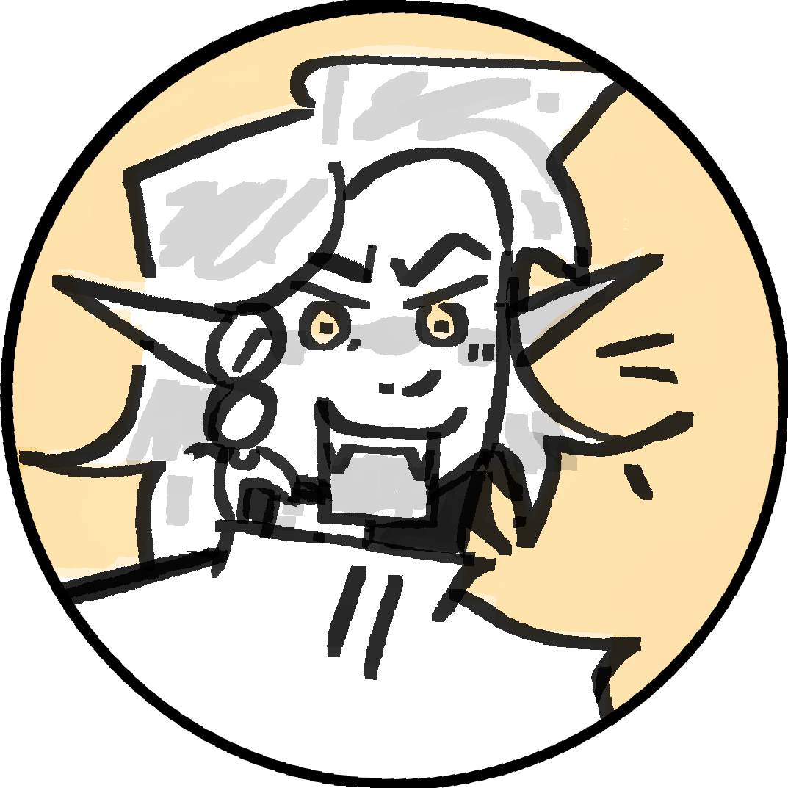

Freya Shan
Overview

Freya is ranked the 7th most powerful vampire (making her the strongest non-prime), and possesses the super analysis soul. This allows her to forsee her opponeents attacks, but only if she has all the data (i.e. if she doesn't know you have a sword she can't forsee a sword attack). She is aware that her vampiric ability means nothing if she doesn't have the skills and reaction time to counter an attack and is adamant that she won't let her lack of bestowed skill get in the way of her climbing the ranks. This attitude tends to make her come off as standoffish and she is not exactly well liked by her peers.
She was part of the tracking team for Noelle, along with Drac and SV, being the primary lookout of the team. Upon Noelle's actual turning she became bitter at how quickly she was being surpassed and would go out of her way to minorly sabotage Noelle's progress. She took this bitterness out against Ellie and AJ, and made a habit of "playing with her food." She was a suspect for possession of Noelle's soul, but after being defeated and inspected by Coach and Ellie she was eliminated from the list.
- 
HIIII

HIIII

HIIII

HIIII